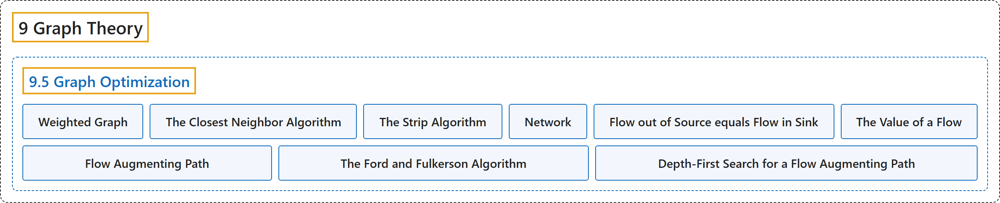

9.5 Graph Optimization
Classification

Glossary
| Term | Definition | 中文翻译 | Source |
|---|---|---|---|
| 9.5 Graph Optimization 图的优化 |
(No definition) | （无定义） | Doerr & Levasseur, n.d., section 9.5 |
| Weighted Graph 带权图 |
"A weighted graph, \((V, E, w)\text{,}\) is a graph \((V, E)\) together with a weight function \(w: E \to \mathbb{R}\text{.}\) If \(e \in E\text{,}\) \(w(e)\) is the weight on edge \(e\text{.}\)" | 带权图 \((V, E, w)\)， 是图 \((V, E)\) 连同权函数 \(w: E \to \mathbb{R}\)。若 \(e \in E\)，则 \(w(e)\) 是边 \(e\)。 上的权。 | Doerr & Levasseur, n.d., Definition 9.5.1 |
| The Closest Neighbor Algorithm 最近邻算法 |
"Let \(G = (V, E, w)\) be a complete weighted graph with \(\vert V\vert = n\text{.}\) The closest neighbor circuit through G starting at \(v_1\) is \(\left(v_1, v_2,\ldots,v_n\right)\text{,}\) defined by the steps:" | 设 \(G = (V, E, w)\) 为 \(\vert V\vert = n\)。 的完全带权图。经过 G 且从 \(v_1\) 出发的最近邻回路为 \(\left(v_1, v_2,\ldots,v_n\right)\)，由如下步骤定义： | Doerr & Levasseur, n.d., Algorithm 9.5.5 |
| The Strip Algorithm 条带算法 |
"Given \(n\) points in the unit square:" | 给定单位正方形中的 \(n\) 个点： | Doerr & Levasseur, n.d., Heuristic 9.5.13 |
| Network 网络 |
"A network is a simple weighted directed graph that contains two distinguished vertices called the source and the sink with the properties that the indegree of the source and outdegree of the sink are both zero, and source is connected to sink. The weight function on a network is the capacity function, which has positive weights." | 网络是简单带权有向图，含有两个特殊顶点，分别称为源点和汇点，且满足：源点的入度和汇点的出度均为零，并且源点与汇点相连。网络上的权函数是容量函数，其权为正。 | Doerr & Levasseur, n.d., Definition 9.5.15 |
| Flow out of Source equals Flow in Sink 源点流出量等于汇点流入量 |
"If \(f\) is a flow, then \(\sum_{(\text{source},v)\in E} f(\text{source},v)\text{ }=\sum_{(v,\text{sink})\in E} f(v,\text{sink})\)" | 若 \(f\) 是一个流，则 \(\sum_{(\text{source},v)\in E} f(\text{source},v)\text{ }=\sum_{(v,\text{sink})\in E} f(v,\text{sink})\) | Doerr & Levasseur, n.d., Theorem 9.5.20 |
| The Value of a Flow 流的值 |
"The two values flow into the sink and flow out of the source were proved to be equal in Theorem 9.5.20 and this common value is called the value of the flow. It is denoted by \(V(f)\text{.}\) The value of a flow represents the amount of material that passes through the network with that flow." | 流入汇点的值与流出源点的值已在定理 9.5.20 中证明相等，这个共同的值称为流的值，记作 \(V(f)\)。流的值表示在该流下通过网络的物质的量。 | Doerr & Levasseur, n.d., Definition 9.5.21 |
| Flow Augmenting Path 增广路径 |
"Given a flow \(f\) in a network \((V, E)\text{,}\) a flow augmenting path with respect to \(f\) is a simple path from the source to the sink using edges both in their forward and their reverse directions such that for each edge \(e\) in the path, \(w(e) - f(e) > 0\) if \(e\) is used in its forward direction and \(f(e) > 0\) if \(e\) is used in the reverse direction." | 给定网络 \((V, E)\)， 中的流 \(f\)，关于 \(f\) 的增广路是从源点到汇点的简单路径，它同时按正向和反向使用边，使得对路径中的每条边 \(e\)，若按正向使用 \(e\) 则 \(w(e) - f(e) > 0\)，若按反向使用 \(e\) 则 \(f(e) > 0\)。 | Doerr & Levasseur, n.d., Definition 9.5.22 |
| The Ford and Fulkerson Algorithm Ford-Fulkerson 算法 |
"Define the flow function \(f_0\) by \(f_0(e)=0\) for each edge \(e \in E\text{.}\)" | 定义流函数 \(f_0\)：对每条边 \(e \in E\)，令 \(f_0(e)=0\)。 | Doerr & Levasseur, n.d., Algorithm 9.5.24 |
| Depth-First Search for a Flow Augmenting Path 搜索增广路径的深度优先搜索 |
"This is a depth-first search for the Sink Initiating at the Source. Let \(E'\) be the set of directed edges that can be used in producing a flow augmenting path. Add to the network a vertex called start and the edge \((\text{start}, \text{source}).\)" | 这是一种从源点出发搜索汇点的深度优先搜索。设 \(E'\) 为可用于产生增广路的有向边的集合。向网络中添加一个称为 start 的顶点和边 (start, source)。 | Doerr & Levasseur, n.d., Algorithm 9.5.26 |
References
Doerr, A., & Levasseur, K. (n.d.). Applied discrete structures. Retrieved October 28, 2026, from https://discretemath.org/ads/index-ads.html